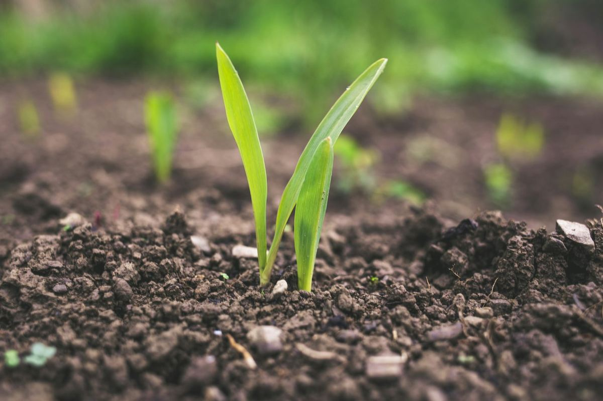
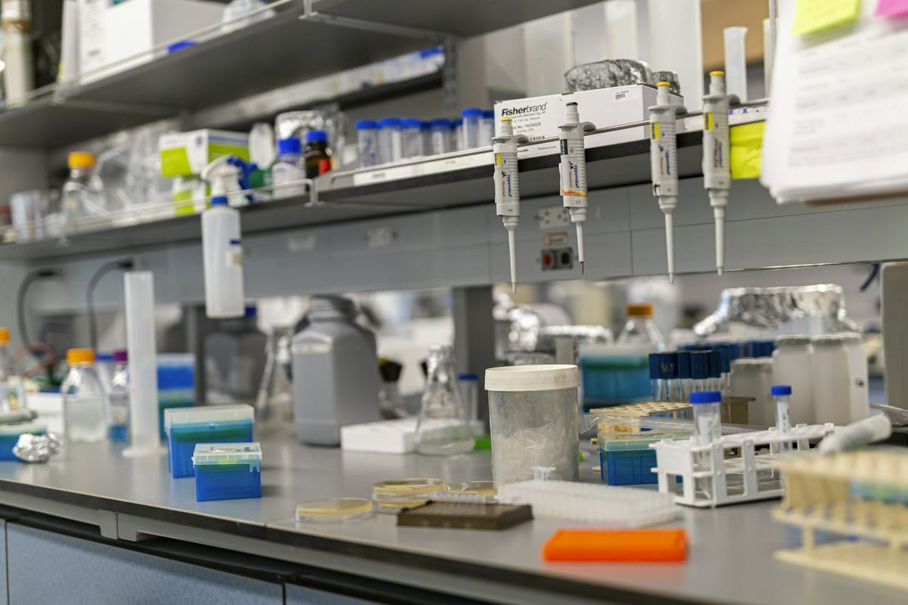
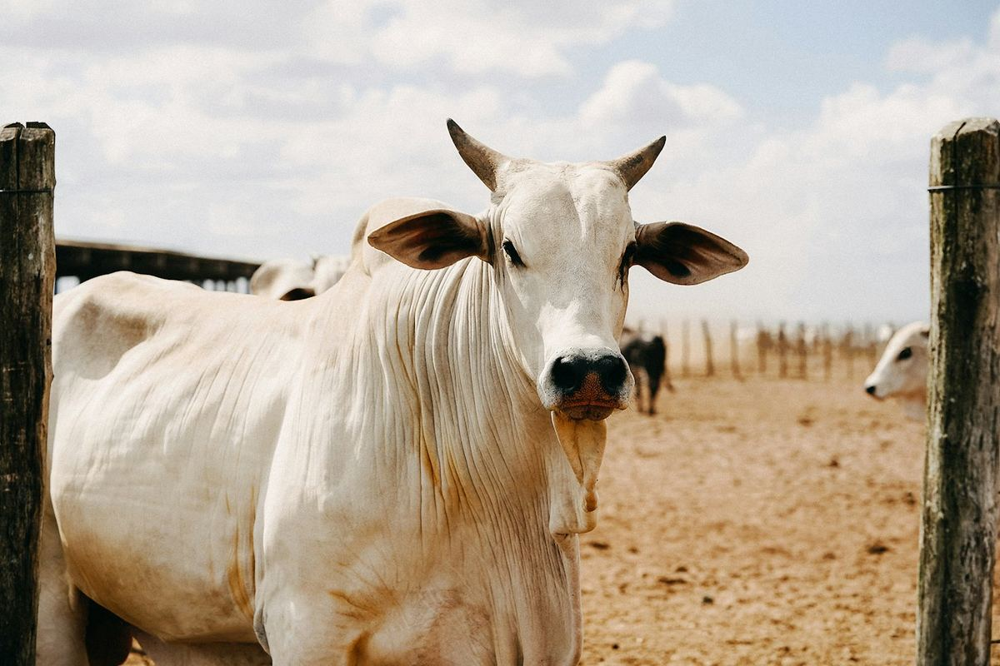
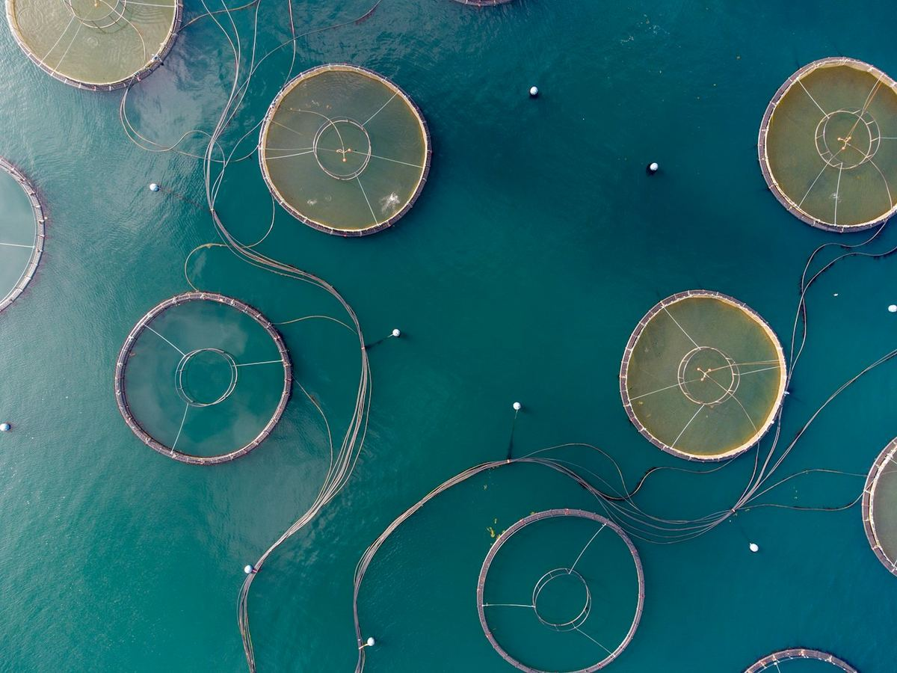
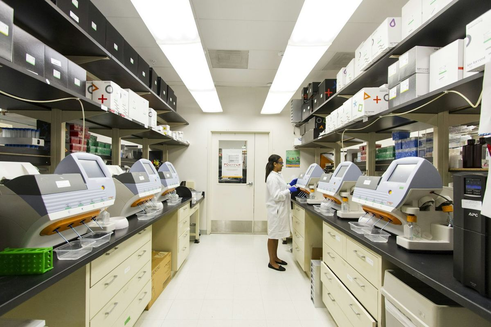
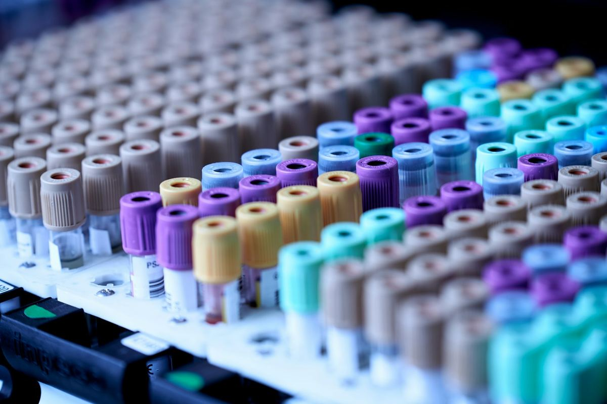

Menyiapkan pengadaan alat laboratorium di instansi
Pengadaan di instansi punya tahapan dan dokumen sendiri. Persiapan yang rapi membantu barang yang datang benar-benar sesuai kebutuhan laboratorium.
Baca artikel
Laboratorium di sektor pertanian, peternakan, dan perikanan menangani sampel yang sangat beragam: tanah, benih, pakan, jaringan tanaman, air kolam, sampai produk hasil panen. Peralatannya harus sesuai dengan jenis sampel tersebut dan dengan kondisi tempat laboratorium berada.
Jenis sampel menentukan cara persiapan dan alat yang diperlukan. Jumlah sampel per hari menentukan kapasitas. Laboratorium pengajaran, laboratorium penelitian, dan unit pengujian di lapangan bisa memerlukan alat yang berbeda untuk parameter yang sama.
Banyak fasilitas di sektor ini berada dekat lahan, kandang, atau tambak. Periksa kestabilan listrik, kualitas air, kelembapan, dan debu di lokasi. Untuk pekerjaan di lapangan, alat portabel yang tahan kondisi luar ruang sering lebih berguna daripada alat meja yang lebih teliti tetapi sulit dipindahkan.
Jika anggaran terbatas, dahulukan alat untuk parameter yang paling sering diuji, lalu tambah secara bertahap. Menyampaikan rencana jangka panjang kepada penyedia membantu memilih peralatan yang masih sesuai saat laboratorium berkembang.
Di bawah naungan CV Izdihaar 84, bidang ini ditangani oleh perusahaan yang khusus menangani mesin dan peralatan laboratorium untuk pertanian, peternakan, dan perikanan.

Pengadaan di instansi punya tahapan dan dokumen sendiri. Persiapan yang rapi membantu barang yang datang benar-benar sesuai kebutuhan laboratorium.
Baca artikel
Mikroskop yang dirawat dengan benar bisa dipakai bertahun-tahun. Ini kebiasaan sederhana yang menjaga lensa tetap bersih dan mekanismenya tetap halus.
Baca artikel
Alat ukur yang tidak dikalibrasi bisa memberi hasil meleset tanpa disadari. Berikut gambaran singkat tentang kalibrasi dan cara menjadwalkannya.
Baca artikel
Laboratorium peternakan membantu memastikan pakan bermutu dan ternak tetap sehat. Berikut gambaran pekerjaan dan peralatan yang umumnya dibutuhkan.
Baca artikel
Banyak masalah di budidaya ikan berawal dari kualitas air. Mengenal parameter dasarnya membantu menentukan alat ukur yang perlu disiapkan.
Baca artikel
Banyak kecelakaan di laboratorium bisa dicegah dengan perlengkapan sederhana yang selalu tersedia dan mudah dijangkau.
Baca artikel
Daftar kebutuhan yang jelas membuat penawaran lebih cepat dibandingkan dan mengurangi risiko alat tidak terpakai. Berikut hal yang perlu ditulis sebelum meminta penawaran.
Baca artikel
Kehabisan bahan habis pakai bisa menghentikan pekerjaan laboratorium. Pencatatan sederhana dan titik pesan ulang membantu menjaga stok tanpa menumpuk barang.
Baca artikel